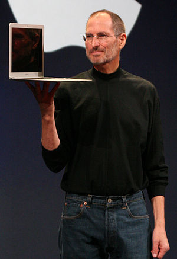

Steven Paul Jobs (San Francisco, 24 de febrero de 1955-Palo Alto, 5 de octubre de 2011),891011fue un empresario, diseñador industrial, magnate empresarial, propietario de medios e inversor estadounidense. Fue cofundador y presidente ejecutivo de Apple y máximo accionista individual de The Walt Disney Company.Fundó Apple en 1976 junto con un amigo de la adolescencia, Steve Wozniak, con ayuda del excompañero de Jobs en Atari, Ronald Wayne, en el garaje de su casa. Aupado por el éxito del Apple II, Jobs obtuvo una gran relevancia pública, siendo portada de Time en 1982.14 Contaba 27 años y ya era millonario gracias a la exitosa salida a bolsa de la compañía a finales del año anterior. La década de los 80 supuso la entrada de potentes competidores en el mercado de los ordenadores personales, lo que originó las primeras dificultades empresariales.
Su reacción fue innovar, o mejor dicho, implementar: a principios de 1984 su compañía lanzaba el Macintosh 128K, que fue el primer ordenador personal que se comercializó exitosamente que usaba una interfaz gráfica de usuario (GUI) y un ratón en vez de la línea de comandos. Después de tener problemas con la cúpula directiva de la empresa que él mismo fundó, renunció.15 Jobs vendió entonces todas sus acciones, salvo una. Ese mismo año recibía la Medalla Nacional de Tecnología del presidente Ronald Reagan, cerrando con este reconocimiento esta primera etapa como emprendedor. Regresó en 1997 a la compañía, que se encontraba en graves dificultades financieras, y fue su director ejecutivo hasta el 24 de agosto de 2011.16171819 En ese verano Apple sobrepasó a Exxon como la empresa con mayor capitalización del mundo.20
Enlaces
Ir a la web de la empresa de AppleIr a la web de la empresa de Pixar
Producto Iphone
Que productos le devemos a Steve Jobs
- Macintosh
- iCloud
- iPod
- AirPods
- Apple TV
- Apple Watch

Texto e imágenes obtemidas de wikipedia